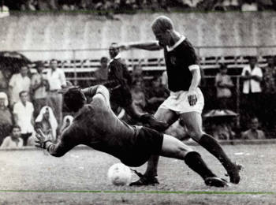

A História da Sociedade Esportiva Palmeiras começa no dia 26 de agosto de 1914, quando o clube foi fundado por imigrantes italianos na cidade de São Paulo com o nome de Palestra Italia.[30] A primeira partida da equipe foi disputada em 24 de janeiro de 1915 contra o Savóia, do atual município de Votorantim, à época distrito de Sorocaba, no interior paulista, e contou com a vitória palestrina por 2 a 0, com gols de Bianco e Alegretti.
Depois de colecionar nas décadas de 20 e 30 do século XX uma série de títulos paulistas e conquistar uma quantidade relevante de torcedores, o clube foi obrigado[31] a mudar seu nome para Sociedade Esportiva Palmeiras em 1942, por ocasião da Segunda Guerra Mundial, já que o Brasil, governado pelo então presidente Getúlio Vargas, declarou guerra aos países do "Eixo" (Alemanha, Itália e Japão) e se alinhou aos países "Aliados", (Estados Unidos, União Soviética, Reino Unido, França, e outros).
Na sua primeira partida com o novo nome de Palmeiras, em 20 de setembro de 1942, sagrou-se campeão paulista com uma vitória sobre o São Paulo no Estádio do Pacaembu, no episódio histórico que ficou conhecido como "Arrancada Heroica".[32] Nas décadas seguintes, com grandes jogadores, como Oberdan Cattani, Waldemar Fiúme, Villadoniga, Jair Rosa Pinto, Liminha e Rodrigues, ampliou seu acervo de títulos e se consolidou com uma das equipes mais importantes do Brasil.
Na virada da primeira para a segunda metade do século, o alviverde atingiu um grande momento, conquistando seu primeiro e um dos mais importantes títulos internacionais. O clube paulistano venceu a Juventus, da Itália, no Estádio do Maracanã,[34] para um público de mais de 100 mil pessoas, na final da Copa Rio de 1951, competição que foi reconhecida posteriormente pela FIFA com um Mundial de Clubes.
Entre 1958 e 1970, nos "anos de ouro" do futebol brasileiro, quando o País conquistou seus três primeiros títulos mundiais de futebol e encantou o planeta, o Palmeiras era um dos poucos times que conseguiam ser páreo para o Santos de Pelé, considerado um dos maiores times do mundo em todos os tempos.
Em 1965, foi inaugurado o Estádio Magalhães Pinto, o "Mineirão", e, para coroar os festejos da inauguração, organizou-se um amistoso entre a Seleção Brasileira e a do Uruguai. Pela primeira vez na história do futebol brasileiro, um time, a Sociedade Esportiva Palmeiras, foi convidado para compor toda a delegação, do técnico ao massagista, do goleiro ao ponta-esquerda, incluindo os reservas. A partida foi realizada no dia 7 de setembro (data da independência brasileira), e o Palmeiras derrotou o Uruguai por 3 a 0. Durante essas décadas de ouro do futebol brasileiro, por conta da técnica apurada e pelo toque de bola refinado de seus jogadores, o Palmeiras foi comparado durante anos a uma "Academia de Futebol",[39] que teve entre os principais protagonistas, em duas fases distintas e consecutivas, grandes nomes do futebol, como Ademir da Guia, Dudu, Julinho Botelho, Djalma Santos, Servílio, Tupãzinho, Luís Pereira, Leivinha, César e Leão.
Coincidentemente, após o maior ícone da Academia, o meia Ademir da Guia, encerrar a carreira em 1977, o Palmeiras ficou durante um longo período sem conquistar títulos. Conhecido como "Divino" por conta da grande classe no trato da bola e pela eficiência, Ademir é considerado o maior jogador da história do alviverde, com a impressionante marca de 901 jogos disputados, 153 gols marcados e dezenas de títulos conquistados, entre campeonatos oficiais e torneios amistosos nacionais e internacionais.[41]
O jejum de títulos entre 1976 e 1993 foi o mais longo da história do clube e exigiu paciência da torcida, que viu seus maiores rivais dominarem as conquistas da década de 1980.[42] O martírio alviverde foi sepultado depois que a diretoria idealizou uma inédita parceria para a gestão do futebol com a empresa multinacional de origem italiana Parmalat.[43] Tal acordo, possibilitou a contratação de grandes jogadores e técnicos competentes, que recolocaram o Palmeiras na trilha das conquistas.Sob o comando de Vanderlei Luxemburgo, o time formado por craques, como Evair, Edmundo, Roberto Carlos, César Sampaio, Mazinho, Edílson e Zinho, goleou o arquirrival Corinthians por 4 a 0 na final do Campeonato Paulista de 1993, encerrando o incômodo tabu.[44] O mesmo time conquistaria o Torneio Rio-São Paulo daquele ano e o Campeonato Brasileiro.[45] No ano seguinte, o alviverde obteve ainda os bicampeonatos paulista e brasileiro, com o meia Rivaldo sendo o destaque na conquista nacional.[46]
Na segunda metade do período de parceria com a Parmalat e sob o comando de Luiz Felipe Scolari, o Palmeiras chegou a três conquistas inéditas: a Copa do Brasil e a Copa Mercosul, ambas de 1998, e a Copa Libertadores da América de 1999.[47] Nestes três títulos, alguns dos destaques da equipe foram os jogadores Arce, Alex, Cléber, Oséas, Paulo Nunes, Júnior, Euller, além dos já citados Zinho, Evair e César Sampaio, e dos goleiros Velloso e Marcos, este último que se transformou num dos maiores ídolos da história alviverde.
Depois do novo período de alegria, que além de títulos contou com duas eliminações históricas do Corinthians na Copa Libertadores da América, e já com o término da parceira com a Parmalat, a torcida alviverde conviveu com a enorme tristeza do rebaixamento no Campeonato Brasileiro de 2002. Numa demonstração de paixão e fidelidade, apoiou o Palmeiras na conquista da Série B de 2003.[51] A primeira década do século XXI foi um período de tentativas de reestruturação política e administrativa para o clube, que voltou a levantar um título de primeira divisão somente em 2008, quando conquistou o Campeonato Paulista.
Em 2012, ano no qual o ídolo Marcos encerrou a carreira, o Palmeiras voltou a levantar um título nacional após 12 anos. Comandada novamente por Luiz Felipe Scolari, a equipe alviverde conquistou a Copa do Brasil de 2012, de forma invicta, depois de levar a melhor contra o Coritiba na final da competição.[53] No mesmo ano que ratificou a marca de maior campeão nacional da história, o alviverde amargou um novo rebaixamento para a Série B do Campeonato Brasileiro, depois de uma campanha marcada por uma série de contusões de jogadores, mau planejamento, elenco limitado e uma administração bastante questionada de seu presidente Arnaldo Tirone.[54]
No ano seguinte, já sob a administração do presidente Paulo Nobre e com uma campanha com clara superioridade da equipe ante as demais, o Palmeiras subiu novamente à primeira divisão com 6 rodadas de antecedência,[55] garantindo a participação na Série A de 2014, ano de seu centenário, quando escapou por pouco de um novo rebaixamento e quando teve a inauguração de sua nova arena como grande motivo de festa.[56]
Em 2015, quando a nova Arena teve seu primeiro ano completo de existência, o local foi palco de vários jogos com recorde de público e renda e fechou o ano com a conquista palmeirense do tricampeonato da Copa do Brasil, disputa que teve o goleiro Fernando Prass como grande herói.[57]
Em 2016, sob o comando do técnico Cuca e com jogadores decisivos, como Dudu, Gabriel Jesus, Moisés e Zé Roberto, o alviverde confirmou seu retorno às conquistas de grande porte e chegou ao seu nono título do Campeonato Brasileiro, depois de liderar 26 das 38 rodadas da competição e realizar a segunda melhor campanha da história dos pontos corridos.[58] Após obter o vice-campeonato em 2017, o Palmeiras obteve o décimo título da competição em 2018, com mais marcas históricas, como a maior invencibilidade e o melhor turno da história da era do Brasileirão de pontos corridos, tendo como destaques os jogadores Dudu, Willian e Bruno Henrique, sob o comando novamente de Felipão.
Na temporada de 2020, em meio à pandemia de COVID-19, o Palmeiras conquistou o bicampeonato da Copa Libertadores da América, com uma equipe comandada pelo técnico português Abel Ferreira e com jogadores decisivos, como Weverton, Gustavo Gómez, Viña, Raphael Veiga, Rony e Luiz Adriano, além de revelações vindas da base, como os jogadores Gabriel Menino, Danilo e Patrick de Paula. Após a competição de 2020 ter sido atrasada em virtude da doença que atingiu o planeta, a fase semifinal e a final foram disputadas em janeiro do ano seguinte. A equipe eliminou o favorito River Plate nas semifinais e, na decisão em jogo único, disputada no Estádio do Maracanã, derrotou o Santos, sagrando-se campeã com a melhor campanha da competição. O segundo título do Palmeiras na Libertadores veio 21 anos após a conquista de 1999.[60] Além da conquista da Libertadores, a temporada marcou a tríplice coroa alviverde, já que ainda foram conquistados os títulos do Campeonato Paulista e da Copa do Brasil, quando o clube chegou ao tetracampeonato.
Ainda em novembro de 2021, com o retorno do atacante Dudu à equipe e com o lateral Piquerez e o meia Gustavo Scarpa somados à base vencedora titular da edição de 2020, o Palmeiras conquistou a Copa Libertadores da América de 2021, tornando-se tricampeão da competição ao derrotar o Flamengo na final disputada em Montevideo, no Uruguai. Com o título, a equipe paulistana se transformou no clube brasileiro com melhor desempenho na história da Libertadores, com uma série de recordes à frente de clubes compatriotas e o único time na história a ter conquistado a Copa Libertadores duas vezes no mesmo ano.
No ano seguinte, menos de um mês de perder a decisão do Copa do Mundo de Clubes da FIFA de 2021 para o Chelsea e ficar com o vice-campeonato mundial, o alviverde conquistou o título inédito da Recopa Sul-Americana de 2022, ao derrotar o Athletico Paranaense, campeão da Copa Sul-Americana de 2021, em finalíssima disputada no Allianz Parque, na primeira decisão internacional da arena alviverde. Ainda em 2022, o alviverde conquistou o título do Campeonato Brasileiro pela 11ª vez, ampliando o seu recorde no País como o maior vencedor nacional.[63]Em 2023, logo no início da temporada, o Palmeiras conquistou mais um título nacional, desta vez a sua primeira Supercopa do Brasil, ao vencer o Flamengo por 4 a 3 em jogo eletrizante.